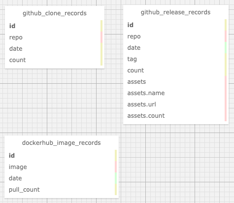

Nebula-Insights，我们基于 Serverless 架构的数据管道方案与代码分享。

这是我首发在 Datawhale 的文章，介绍我们如何用公有云 Serverless 技术：Google Cloud Scheduler，Google Cloud Functions 和 BigQuery 搭建数据管道，收集探索开源社区洞察。并将全部代码开源在 GitHub。
引子 我们想要收集一些帮助 Nebula Graph 社区运营的 metrics，希望能从不同来源的数据自动化周期性收集、处理、并方便地展现出来做数据驱动分析的基础设施。
Nebula Graph 是一个现代的开源分布式图数据库(Graph Database)，欢迎同学们从:
- 官网: https://nebula-graph.com.cn
- Bilibili: https://space.bilibili.com/472621355
- GitHub:https://github.com/vesoft-inc/nebula-graph 了解我们哈。
需求
- 方便增加新的数据
- 数据收集无需人为触发（自动、周期性）
- 每天数据量不超过1000条
- 数据可以生成 dashboard，也可以支持统计分期 query
- 高可用，数据安全
- 低预算，尽可能不需要运维人力
需求分析
我们需要搭建一个系统能实现
- 一个能周期性触发获取数据的事件的服务: scheduler
- 一个触发之后，把数据 ETL 到数据库中的服务: ETL worker
- 一个数据仓库
- 一个能够把数据库作为源，允许用户 query，展示数据的界面: Data-UI
这个需求的特点是虽然数据量很小、但是要求服务高可用、安全。因为这种情况下自建服务器还需要保证HA和数据安全会一定会消耗昂贵运维人力，所以我们应该尽量避免在自己维护的服务器中搭建 scheduler, 和数据库。
最终，我们选择了尽量使用公有云的 aaS 的方案:
|
|
因为我个人比较熟悉 Google Cloud Platform(GCP)的原因，加上GCP在大数据处理上比较领先，再加上Google提供的 free tier额度非常大方，以至于在我们这个数据量下，所有workload都会是免费的。 这个方案最后选择了全栈 Google Cloud，然而，这实际上只是一个参考，同学们完全可以在其他公有云提供商那里找到对应的服务。
这里我简单介绍一下， Google Cloud Scheduler是自解释的，不用多介绍了。 而 Google Cloud Functions是GCP的无服务器(serverless)的 Function as a Service服务，它的好处是我们可以把无状态的 event-driven 的 workload 代码放上去，它是按需付费（pay as you go)的，类似的服务还有 Google Cloud Run，后者的区别在于我们提供的是一个docker/container（这使得能支持的运行环境可以使任何能跑在容器里的东西），而 Cloud Functions是把我们的代码文件放上去。他们的效果是类似的，因为我准备用Python来做 ETL的东西，Clouf Functions已经支持了，我就直接选择它了。
在scheduler里边，我定义了每一天它发一个 pub/sub（类似于kafka，这里google可以保证至少发成功一次）消息给 Cloud Functions，然后 Cloud Functions会去做 ETL的工作。
这里，实际上我的设计里这个触发的函数调会把数据从API那里获取下来，在内存里处理好之后，存储到在对象存储里为 JSON 文件，然后再调用 Google BigQuery 的 API让 BigQuery直接从对对象存储里拉取 JSON 文件，导入记录到相应的表之中。
Google BigQuery 作为GCP 特别有竞争力的一个产品，是它数据仓库，BigQuery 可以无限扩容，支持海量数据导入，支持 SQL-like 的 query，还自带ML算法，通过SQL就能调用这些算法。它可以和很多GCP以及第三方的组件可以集成起来。
Google Data Studio 是GCP的数据 Insights产品，如果大家用过 Google Analytics 应该已经用过它了。
数据的获取，API
我们第一阶段想要收集的数据来源是 GitHub 上，社区项目的统计数据、Docker Hub上，社区镜像的拉取计数，之后，会增加更多维度的数据。
- Github API, ref: https://pygithub.readthedocs.io 这里我们利用了一个Github API的一个 Python 封装，下边是在 IDLE/iPython/Jupyter 里尝试的例子
|
|
除了repo的 clone, view数据，我们还可以获取到 release的数据:
|
|
- Docker Hub API, ref https://github.com/amalfra/docker-hub/blob/master/src/libs/docker_hub_client.py
这里我们服用了 docker-hub 这个开源小项目中的一个库
docker_hub_client.py来作为 Docker Hub API的 python wrapper
|
|
实现
计划任务调度 with Cloud Scheduler
前边提到，Scheduler --> Functions 中间是通过消息队列实现的可靠事件触发，我们需要在 Google Cloud Pub/Sub里创建一个订阅消息，后边我们会把这个订阅消息从 Scheduler 定期发送，并且在 Function创建的时候定义为触发条件。
|
|
任务的创建非常直接，在 Scheduler Web Console 上直接图形化操作就可以了，记得要选择触发 Pub/Sub 消息为 cron-sub，消息主题为 nebula-insights-cron-topic
ETL Worker with Python + Google Functions
当 Scheduler 每天定时发送消息之后，接收方就是我们要定义的 Google Functions了，它的定义如图 第一步，选择它的触发类型为 Pub/Sub，同时要定义消息的主题和名字。
第二步就是把代码放进去:

|
|
这部分的逻辑就是通过前边分析了的API取得信息，然后组装成需要的格式存到 Cloud Storage(对象存储），然后再导入到 BigQuery（数仓）之中，全部代码在GitHub上: https://github.com/wey-gu/nebula-insights/blob/main/functions/data-fetching-0/main.py 另外，可以参考这个官方教程 https://cloud.google.com/scheduler/docs/tut-pub-sub
数仓表结构定义
数仓的表结构比较直接，schema的图贴在下边了，值得注意的是，BigQuery支持嵌套的表结构（而不像一般关系型数据库那样需要把这样的逻辑结构用辅助表来表示），在我们这个场景下非常方便，比如release表中的 assets的三个嵌套字段。 
更详细的信息可以参考GitHub上的介绍和代码: https://github.com/wey-gu/nebula-insights#data-etl-bigquery-and-gcs
数据可视化
到这里，我们就可以自动在BigQuery里存有每天收集的不同来源的统计数据啦，有了它，我们可以借助 Data Studio 来生成各式各样的可视化表示。
参考 https://cloud.google.com/bigquery/docs/visualize-data-studio
总结
这样，我们实际上不需要任何认为维护的成本和投入，就搭建了一整个数据的流水线，并且只需要按照数据用量付费，在我们的数据量下，及时考虑未来增加数十个新的量度的收集，我们依然没有达到需要付费的用量，是不是很Cool？ 因为数据同时存在于对象存储与数仓里，我们可以方便随时把数据导入任意其他平台上。
BigQuery还有一些非常常用的，自带的机器学习的功能，只需要写一个SQL-Like的query就能触发然后获得预测结果，如果我们用到这些功能的话也会回到 datawhale 为同学们继续分享哈。
第一次做数据工程方面的分享，如果有错误的地方欢迎大家不吝指出哈~~
谢谢！